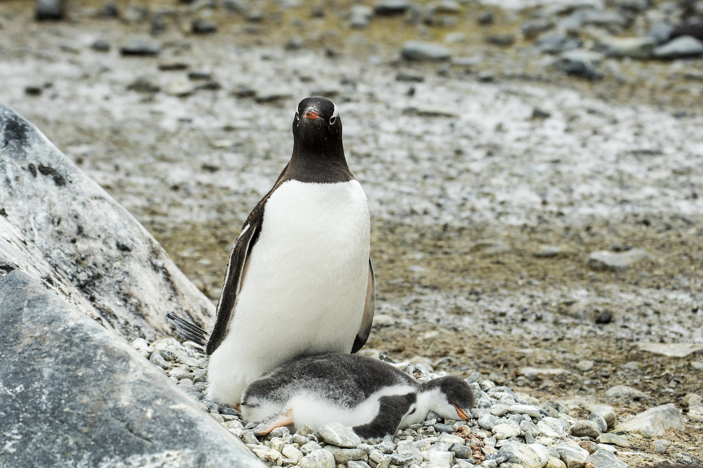

Penguins
Penguins (order Sphenisciformes, family Spheniscidae are a group of aquatic flightless birds.
They live almost exclusively in the Southern Hemisphere: only one species, the Galápagos penguin, is found north of the Equator.
Highly adapted for life in the water, penguins have countershaded dark and white plumage and flippers for swimming.
Most penguins feed on krill, fish, squid and other forms of sea life which they catch with their bills and swallow it whole while swimming.
A penguin has a spiny tongue and powerful jaws to grip slippery prey.
They spend roughly half of their lives on land and the other half in the sea.
The largest living species is the Emperor penguin (Aptenodytes forster). On average, adults are about 1.1 m (3 ft 7 in) tall and weigh 35 kg (77 lb).
The smallest penguin species is the little blue penguin (Eudyptula minor), also known as the fairy penguin, which stands around 33 cm (13 in) tall and weighs 1 kg (2.2 lb).
Today, larger penguins generally inhabit colder regions, and smaller penguins inhabit regions with temperate or tropical climates.
Some prehistoric penguin species were enormous: as tall or heavy as an adult human.
There was a great diversity of species in subantarctic regions, and at least one giant species in a region around 2,000 km south of the equator 35 mya,
during the Late Eocene, a climate decidedly warmer than today.

Table of Contents
Etymology
Systematics and evolution
Behavior
Conservation Status
Links to more fun animals
Etymology
The word penguin first appears in literature at the end of the 16th century. When European explorers discovered what are today known as penguins
in the Southern Hemisphere, they noticed their similar appearance to the great auk of the Northern Hemisphere, and named them after this bird,
although they are not closely related.
The etymology of the word penguin is still debated. The English word is not apparently of French, Breton or Spanish origin
(the latter two are attributed to the French word pingouin), but first appears in English or Dutch.
Some dictionaries suggest a derivation from Welsh pen, "head" and gwyn, "white", including the Oxford English Dictionary,
the American Heritage Dictionary, the Century Dictionary and Merriam-Webster, on the basis that the name was originally
applied to the great auk, either because it was found on White Head Island (Welsh: Pen Gwyn) in Newfoundland, or because
it had white circles around its eyes (though the head was black).
An alternative etymology links the word to Latin pinguis, which means "fat" or "oil". Support for this etymology can be found
in the alternative Germanic word for penguin, fettgans or "fat-goose", and the related Dutch word vetgans.
Adult male penguins are called cocks, females are hens; a group of penguins on land is a waddle, and a group of penguins in the water is a raft.
Systematics and evolution
Living and recently exctint species
The number of extinct penguin species is debated. Depending on which authority is followed, penguin biodiversity varies between 17 and 20 living species,
all in the subfamily Spheniscinae. Some sources consider the white-flippered penguin a separate Eudyptula species, while others treat it as a
subspecies of the little blue penguin; the actual situation seems to be more complicated. Similarly, it is still unclear whether the
royal penguin is a separate species or merely a color morph of the macaroni penguin. The status of the rockhopper penguins is also unclear.
An Emperor Penguin

Behavior
Breeding
Penguins for the most part breed in large colonies, the exceptions being the yellow-eyed and Fiordland species;
these colonies may range in size from as few as 100 pairs for gentoo penguins to several hundred thousand in the case of king,
macaroni and chinstrap penguins. Living in colonies results in a high level of social interaction between birds,
which has led to a large repertoire of visual as well as vocal displays in all penguin species. Agonistic displays are those
intended to confront or drive off, or alternately appease and avoid conflict with, other individuals.
Penguins form monogamous pairs for a breeding season, though the rate the same pair recouples varies drastically.
Most penguins lay two eggs in a clutch, although the two largest species, the emperor and the king penguins, lay only one.
With the exception of the emperor penguin, where the male does it all, all penguins share the incubation duties. These incubation
shifts can last days and even weeks as one member of the pair feeds at sea.
Conservation Status
The majority of living penguin species have declining populations.
According to the IUCN Red List, their conservation statuses range from Least Concern through to Endangered.
Gentoo penguin watching over a sleeping chick at Brown Bluff

Link to original Wikipedia page